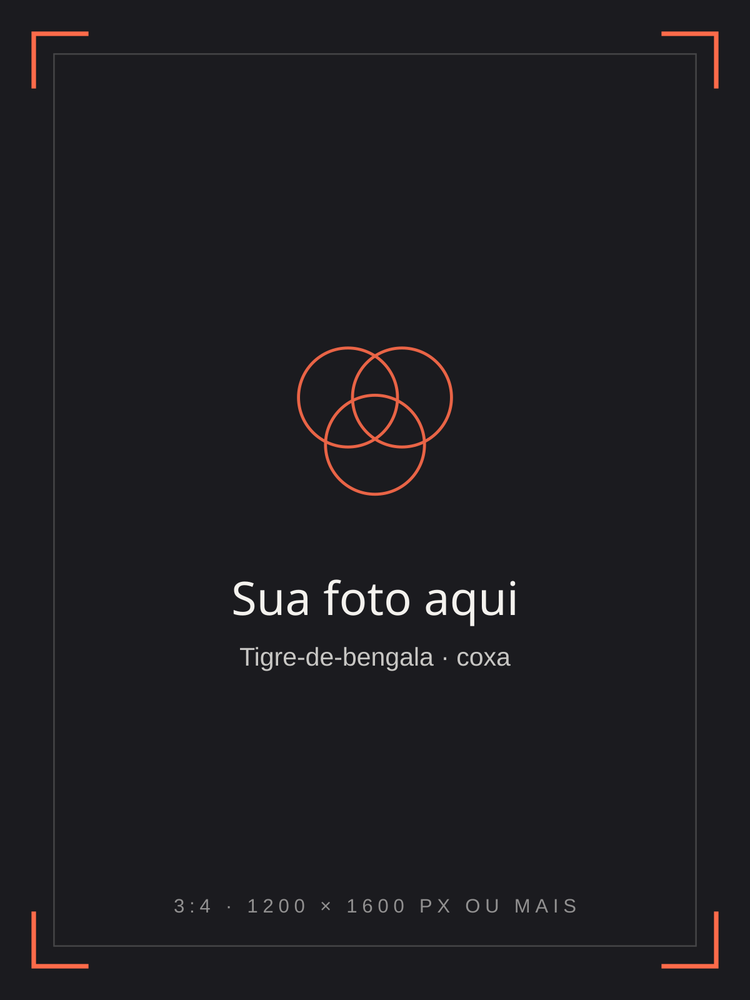
Íris Valença, tatuadora de realismo colorido
Cor viva na pele.
Retratos, animais e natureza em peças grandes, estudadas da referência à última camada de luz.
Conversar sobre um projeto01 — Obras
Obras
em destaque.
Uma seleção de peças cicatrizadas e recém-terminadas. Cada uma começou numa boa referência.
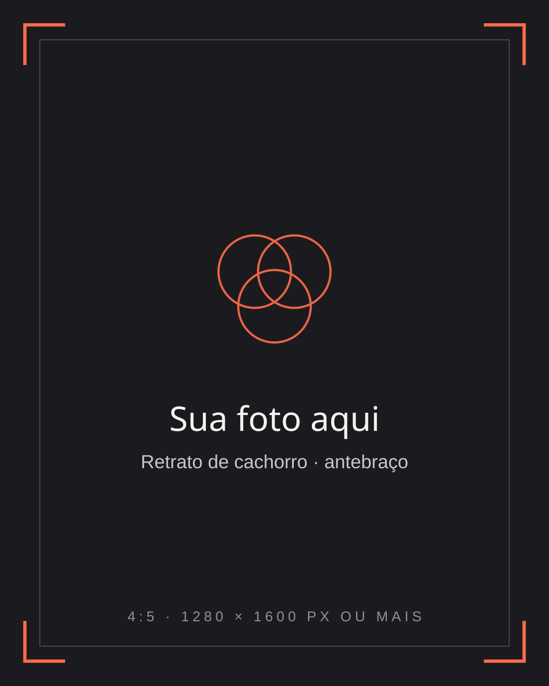
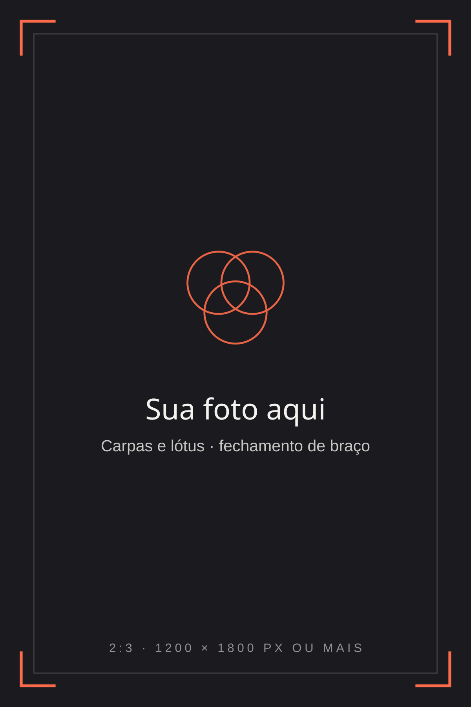
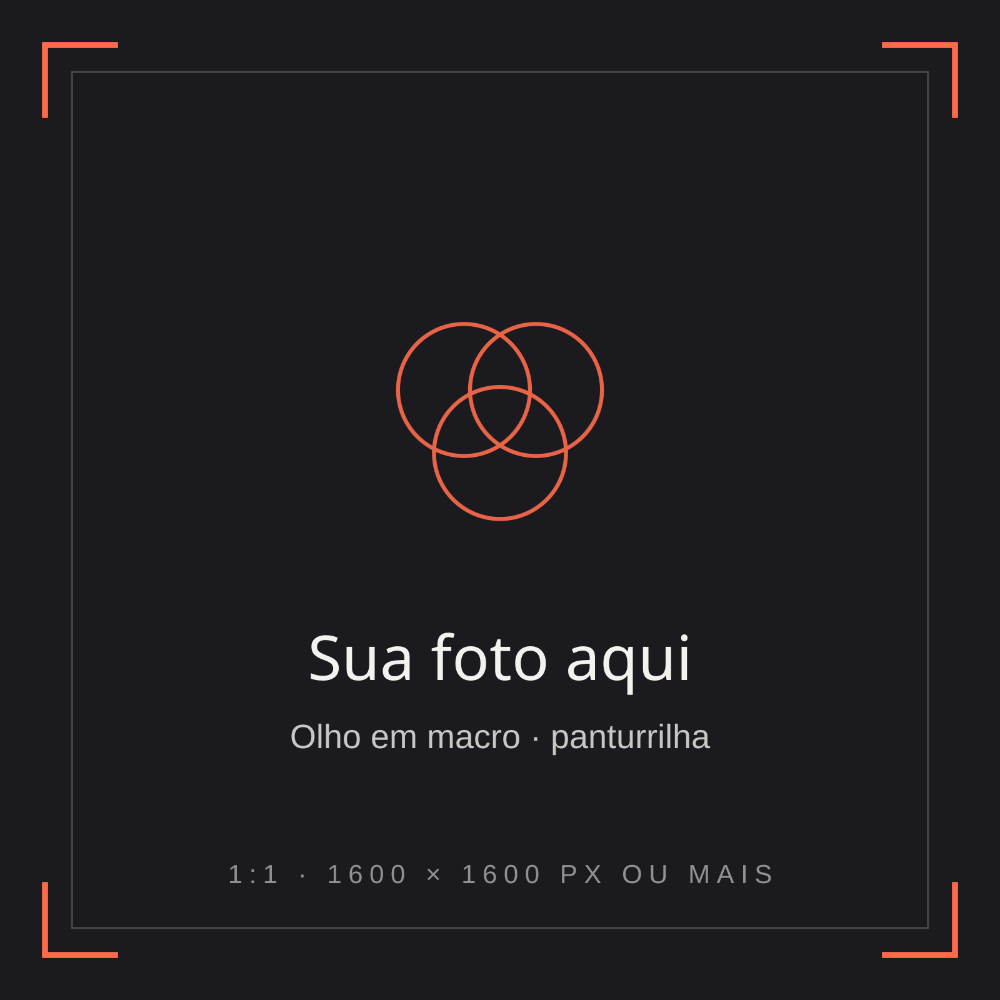
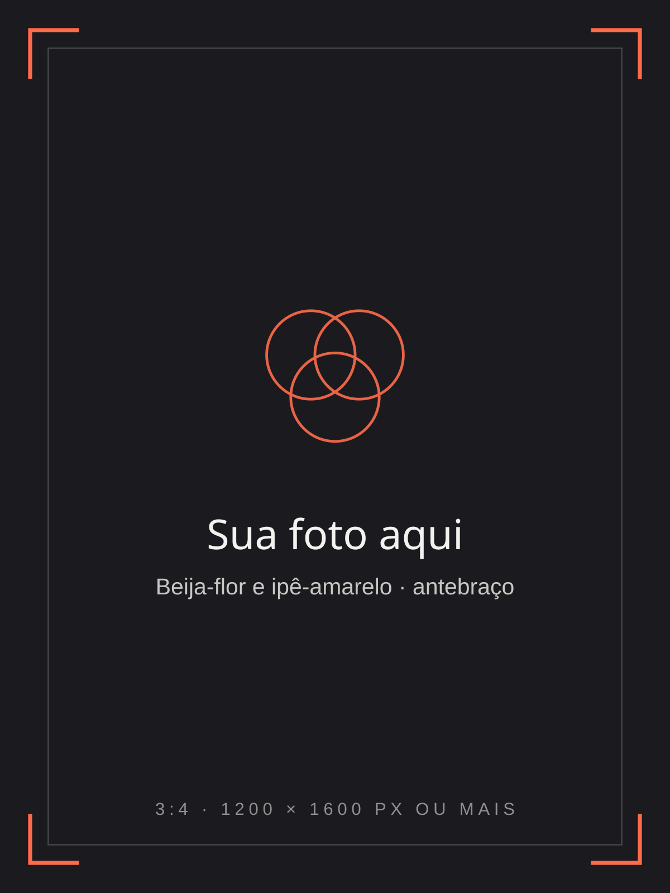
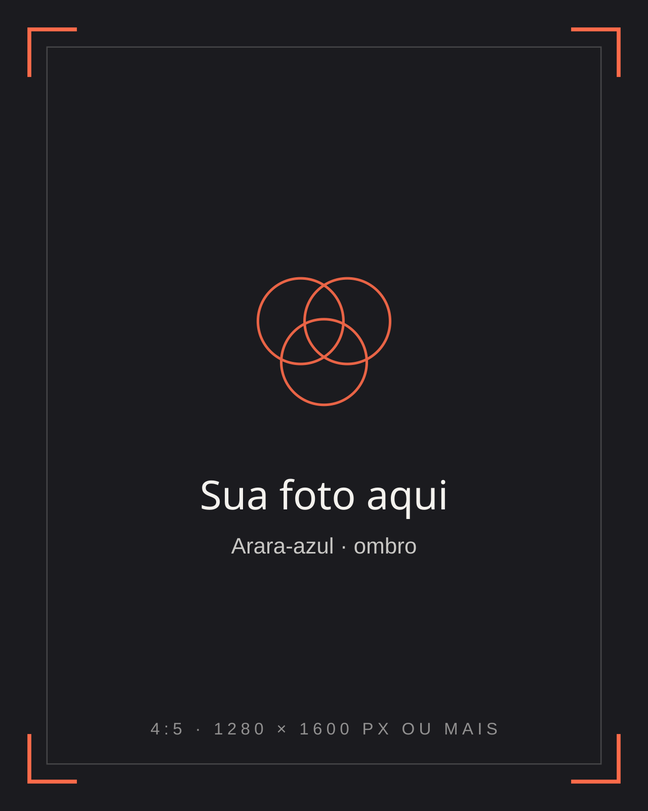
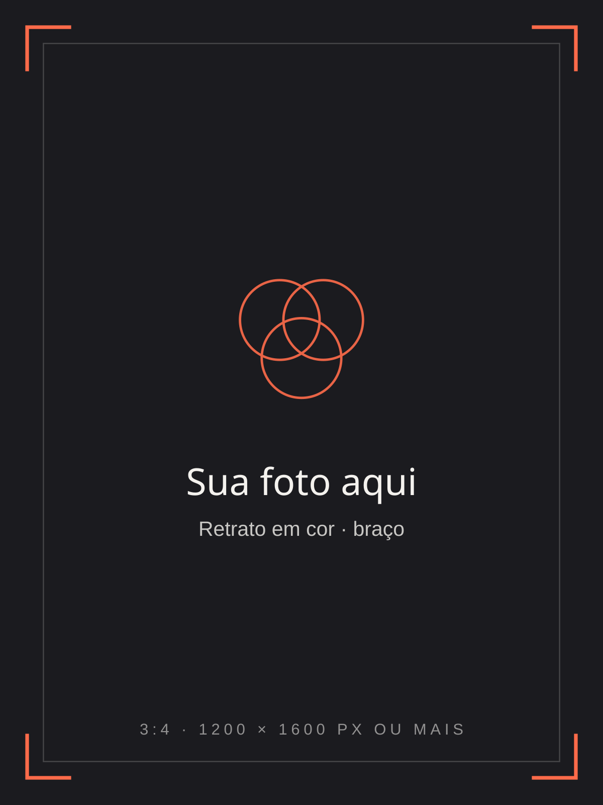
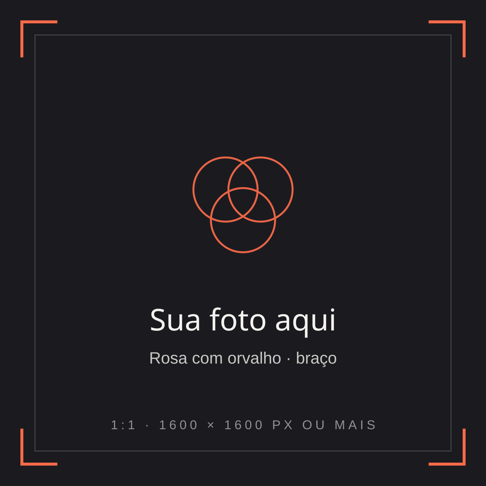
Mais obras
no Instagram.
02 — Temas
Temas que
pedem cor.
Cada tema tem a sua luz. A referência e o lugar do corpo decidem o resto.
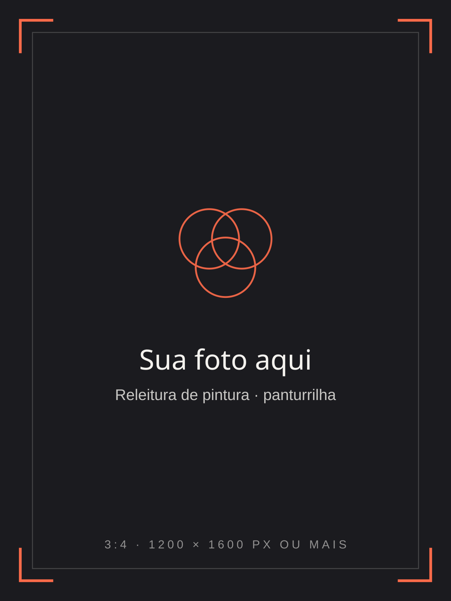
A cor nasce
da luz.
Todo realismo começa estudando de onde a luz vem.
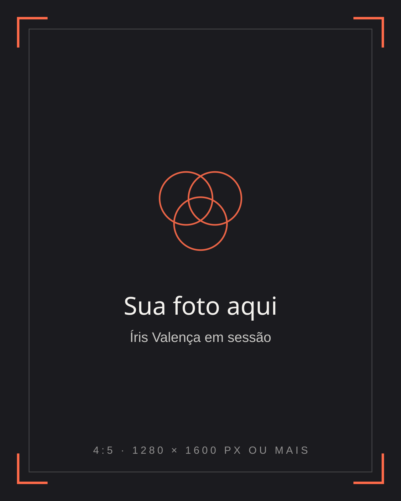
03 — Sobre
Sobre a Íris.
Tatuadora de realismo colorido. Estuda luz, pele e cor em cada projeto.
A Íris veio da pintura e trouxe para a tatuagem o mesmo olhar: entender de onde vem a luz antes de escolher qualquer cor. Hoje se dedica ao realismo colorido — retratos, animais e natureza —, quase sempre em peças grandes, feitas em várias sessões.
Cada projeto começa numa conversa e numa boa referência. O desenho é estudado e montado sobre a região do corpo antes da primeira sessão, para que a composição acompanhe o movimento da pele.
- Realismo colorido
- Projetos em sessões
- Paleta estudada para cada pele
04 — Processo
Como nasce
um realismo.
Projeto grande se faz em camadas, com tempo para a pele descansar entre elas.
- 01
Consulta e referência
Você me conta a ideia e manda as referências. Avaliamos juntos a foto, o tamanho e a região do corpo.
- 02
Estudo e montagem
Monto o desenho no computador sobre a foto da região e ajusto composição, luz e paleta para a sua pele.
- 03
Base e sombras
A primeira sessão constrói a estrutura: desenho, volumes e as sombras que vão sustentar a cor.
- 04
Camadas de cor
A cor entra em camadas, do fundo para a frente, sempre respeitando a luz definida no estudo.
- 05
Intervalos de cicatrização
Entre uma sessão e outra a pele cicatriza. A gente planeja o número de sessões pelo tamanho e pela região.
- 06
Luz e finalização
Por último entram os brilhos, os contrastes finais e os ajustes. Você sai com todas as orientações de cuidado.
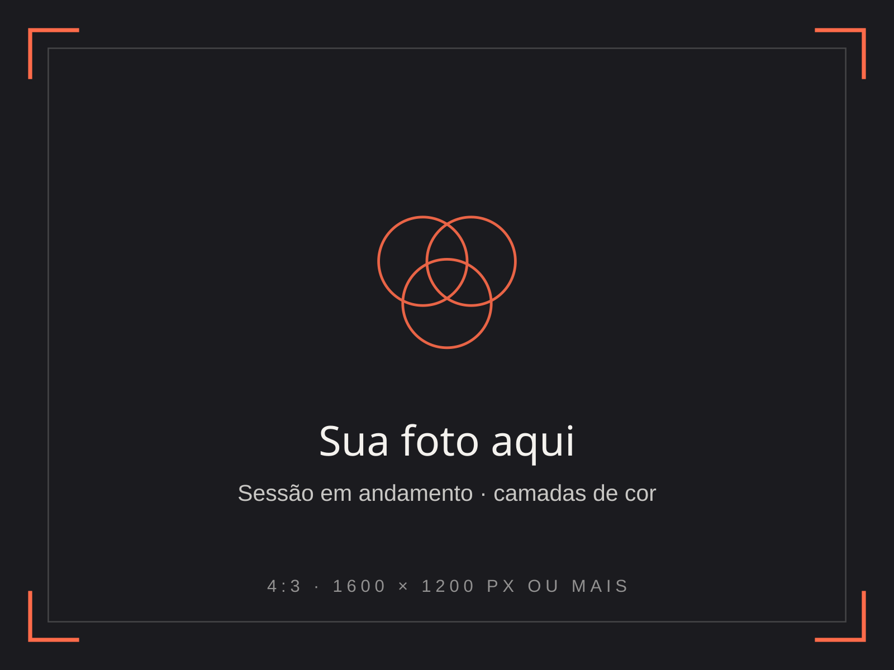
05 — Para durar
O que faz
a cor durar.
-
Referência boa
Foto nítida, com luz definida e boa resolução. O detalhe que não está na referência não aparece na pele.
-
Tamanho certo
Realismo precisa de espaço. Um rosto pequeno demais perde os olhos com o tempo; o tamanho é escolhido pela quantidade de detalhe.
-
Contraste construído
Cor sem sombra fica chapada. É o contraste entre luz e escuro que mantém a imagem legível com os anos.
-
Cuidado com o sol
Protetor solar sempre que a tatuagem ficar exposta. Sol é o que mais desbota a cor.
06 — Dúvidas
Dúvidas
sobre cor.
O que mais me perguntam antes de começar um realismo.
Toda tatuagem muda um pouco com os anos. O que segura a cor é contraste bem construído, tinta de qualidade e cuidado com o sol. Peça bem planejada envelhece bem.
Durante a cicatrização, nada de sol, piscina ou mar. Depois de cicatrizada, protetor solar alto sempre que a tatuagem ficar exposta. É o cuidado que mais preserva a cor.
Foto com boa resolução, boa luz e foco no que importa. Em retrato, a foto decide o resultado: olhos nítidos, sem filtro e com a luz vindo de um lado só ajudam muito.
Faço. Retrato pede uma referência muito boa e tamanho suficiente para os detalhes do rosto. A gente avalia a foto juntos antes de fechar o projeto.
Fica, e a paleta é pensada para a sua pele. Em peles mais escuras alguns tons se comportam de outro jeito; isso entra no estudo de cor antes da primeira sessão.
Depende do tamanho, da região e do nível de detalhe. A gente planeja o número de sessões pelo tamanho e pela região, sempre com intervalo de cicatrização entre elas.
Me manda a ideia, a referência, o tamanho aproximado e a região do corpo. Com isso eu te explico o planejamento e passo o orçamento.
Às vezes, sim. Depende do tamanho e de quão escura é a antiga. Manda uma foto que eu te digo com sinceridade o que dá para fazer.